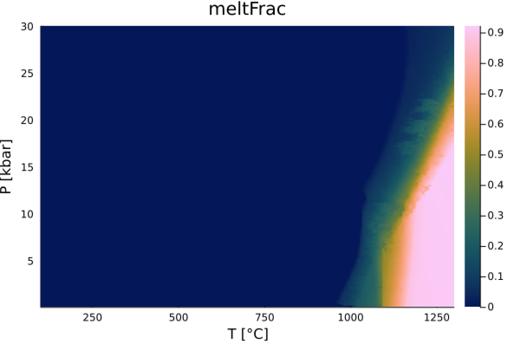

Plotting
We provide a number of plotting routines. Note that these plotting routines become available only when a backend of Makie.jl is loaded.
Missing docstring for GeoParams.PlotStressStrainrate_CreepLaw. Check Documenter's build log for details.
GeoParams.PlotHeatCapacity — Function fig,ax,T,Cp_vec = PlotHeatCapacity(Cp::AbstractHeatCapacity; T=nothing, plt=nothing, lbl=nothing)Creates a plot of temperature T vs. heat capacity, as specified in Cp (which can be temperature-dependent).
Optional parameters
- T: temperature range
- plt: a previously generated plotting object
- lbl: label of the curve
Example
julia> Cp = T_HeatCapacity_Whittacker()
julia> fig,ax,T,Cp_vec = PlotHeatCapacity(Cp)GeoParams.PlotConductivity — FunctionT,Kk,plt = PlotConductivity(Cp::AbstractConductivity; T=nothing, plt=nothing, lbl=nothing)Creates a plot of temperature T vs. thermal conductivity, as specified in k (which can be temperature-dependent).
Optional parameters
T: temperature rangeplt: a previously generated plotting objectlbl: label of the curve
Example
julia> k = T_Conductivity_Whittacker()
julia> T,KK,plt = PlotConductivity(k)you can now save the figure to disk with:
julia> using Plots
julia> savefig(plt,"Tdependent_conductivity.png")Missing docstring for GeoParams.PlotMeltFraction. Check Documenter's build log for details.
GeoParams.PlotPhaseDiagram — Functionplt, data, Tvec, Pvec = PlotPhaseDiagram(p::PhaseDiagram_LookupTable; fieldname::Symbol, Tvec=nothing, Pvec=nothing)Plots a phase diagram as a function of T (x-axis) and P (y-axis). We either use the default ranges of the diagram, or you can specify the temperature and pressure ranges (while specifying units). The return arguments are the plotting object plt (so you can modify properties) as well as the data that is being plotted
Example
julia> PD_Data = PerpleX_LaMEM_Diagram("./test/test_data/Peridotite.in")
Perple_X/LaMEM Phase Diagram Lookup Table:
File : Peridotite.in
T : 293.0 - 1573.000039
P : 1.0e7 - 2.9999999944e9
fields : :meltRho, :meltRho, :meltFrac, :rockRho, :Rho, :rockVp
:rockVs, :rockVpVs, :meltVp, :meltVs, :meltVpVs
:Vp, :Vs, :VpVs, :cpxFrac
julia> PlotPhaseDiagram(PD_data,:meltFrac, Tvec=(100:1:1400).*C, Pvec=(.1:.1:30).*kbar )This will generate the following plot

You can also use the default pressure/temperature ranges in the diagrams:
julia> PlotPhaseDiagram(PD_data,:Rho)GeoParams.PlotDeformationMap — Functionfig = PlotDeformationMap(v; args=(P=0.0, d=1e-3, f=1.0),
σ = (1e-2, 1e8), # in MPa
T = (10, 1000), # in C
ε = (1e-22, 1e-8), # in 1/s
n = 400, # number of points
rotate_axes = false, # flip x & y axes
strainrate = true, # strainrate (otherwise stress)
viscosity = false, # plot viscosity instead of strainrate/stress
boundaries = true, # plot deformation boundaries
levels = 20, # number of contour levels
colormap=:viridis, # colormap
filename=nothing, # if you want to save this to file
fontsize=40, # fontsize of labels
res=(1200, 900)) # resolution in pixelsCreates a deformation mechanism map (T/εII vs. stress/viscosity or T/τII vs. strainrate/viscosity) for given (composite) rheology v
Example
julia> import GeoParams.Diffusion, GeoParams.Dislocation
julia> v1 = SetDiffusionCreep(Diffusion.dry_anorthite_Rybacki_2006);
julia> v2 = SetDislocationCreep(Dislocation.dry_anorthite_Rybacki_2006);
julia> v = CompositeRheology(v1,v2)
julia> PlotDeformationMap(v, levels=100, colormap=:roma)Next, let's plot viscosity and flip x & y axis:
julia> PlotDeformationMap(v, viscosity=true, rotate_axes=true)Instead of plotting stress vs. T and computing strainrate, we can also provide strainrate/T and compute stress:
julia> PlotDeformationMap(v, strainrate=false)Or plot viscosity but only add contours in a certain range:
julia> PlotDeformationMap(v, strainrate=false, viscosity=true, levels=Vector(18:.25:24))GeoParams.PlotDiffusionCoefArrhenius — Functionfig, ax = PlotDiffusionCoefPlotDiffusionCoefArrhenius(x::Union{Tuple{Vararg{AbstractChemicalDiffusion}}, NTuple{N, AbstractChemicalDiffusion} where N, AbstractChemicalDiffusion};
P=1u"GPa", fO2=1NoUnits, log_type=:log10, linestyle=:solid, linewidth=1, color=nothing, label=nothing,
title="", fig=nothing, filename=nothing, res=(1200, 1200), legend=true, legendsize=15, position=:rt,
labelsize=35, xlims=(nothing, nothing), ylims=(nothing, nothing))Creates a plot of log(D) versus 10^4/T for one or a tuple of ChemicalDiffusionData structures.
Optional parameters
P: Pressure (default: 1 GPa)fO2: Oxygen fugacity (default: 1 NoUnits)log_type: Logarithm type forD(default: :log10, options: :log10, :ln)linestyle: Line style for the plot (default: :solid)linewidth: Line width for the plot (default: 1)color: Line color for the plot (default: nothing)label: Label for the plot (default: nothing)title: Title for the plot (default: "")fig: Existing figure to plot on (default: nothing)filename: Filename to save the plot (default: nothing)res: Resolution of the plot (default: (1200, 1200))legend: Whether to display the legend (default: true)legendsize: Size of the legend text (default: 15)position: Position of the legend (default: :rt)labelsize: Size of the axis labels (default: 35)xlims: Limits for the x-axis (default: (nothing, nothing))ylims: Limits for the y-axis (default: (nothing, nothing))
Example
using GeoParams
using GLMakie
# obtain diffusion data
Fe_Grt = Garnet.Grt_Fe_Chakraborty1992
Fe_Grt = SetChemicalDiffusion(Fe_Grt)
Mg_Grt = Garnet.Grt_Mg_Chakraborty1992
Mg_Grt = SetChemicalDiffusion(Mg_Grt)
Mn_Grt = Garnet.Grt_Mn_Chakraborty1992
Mn_Grt = SetChemicalDiffusion(Mn_Grt)
fig, ax = PlotDiffusionCoefArrhenius((Fe_Grt, Mg_Grt, Mn_Grt), P= 1u"GPa", linewidth=3)